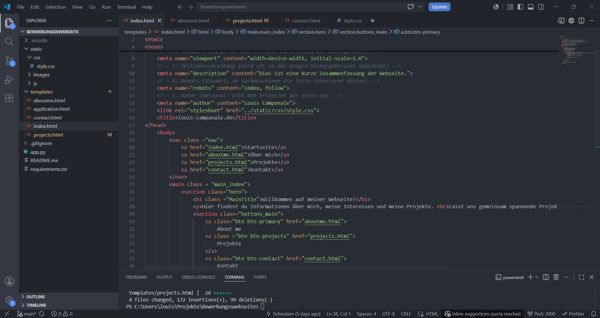
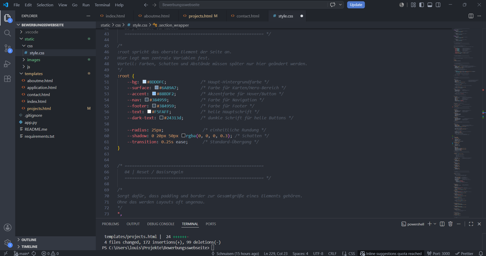

Meine Projekte
Hier findest du eine Auswahl meiner Projekte, die ich während meiner Umschulung zum Fachinformatiker für Anwendungsentwicklung erstellt habe. Jedes Projekt zeigt meine Fähigkeiten in verschiedenen Bereichen der Softwareentwicklung.
Webentwicklung meiner Portfolio-Seite
Mein bislang größtes und vielfältigstes Projekt ist die Entwicklung meiner persönlichen Website.
Was ich gelernt habe:
- HTML, CSS und JavaScript
- Responsive Design
- Benutzerfreundliches Layout

Screenshots


Retrospektive Portfolio
Durch die Entwicklung meiner Website konnte ich viele praktische Erfahrungen im Bereich Webentwicklung sammeln. Besonders habe ich gelernt, wie wichtig eine saubere Strukturierung von HTML und CSS ist, damit das Projekt langfristig übersichtlich und erweiterbar bleibt. Außerdem habe ich ein besseres Verständnis für Layout-Techniken wie Flexbox und Grid sowie für responsive Design und Animationen mit CSS entwickelt. Auch der Umgang mit Git und GitHub hat mir gezeigt, wie wichtig Versionsverwaltung und ein strukturierter Workflow in der Softwareentwicklung sind. Rückblickend würde ich beim nächsten Projekt früher mit einer klaren Planung der Seitenstruktur und des Designs beginnen, anstatt viele Änderungen erst während der Entwicklung vorzunehmen. Zudem würde ich Komponenten und CSS-Klassen von Anfang an konsistenter benennen und die Dateien stärker modularisieren, um Wartbarkeit und Skalierbarkeit zu verbessern. Insgesamt hat mir das Projekt gezeigt, wie entscheidend saubere Architektur und iterative Verbesserung in der Webentwicklung sind.